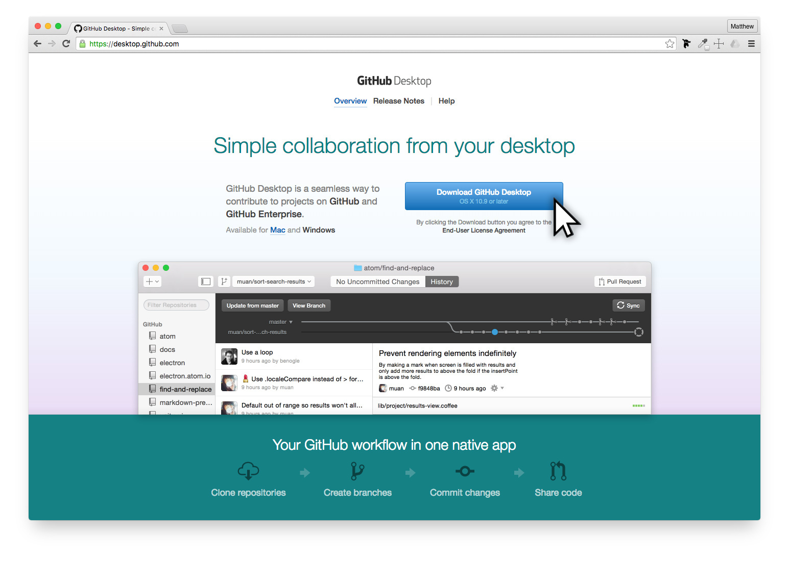
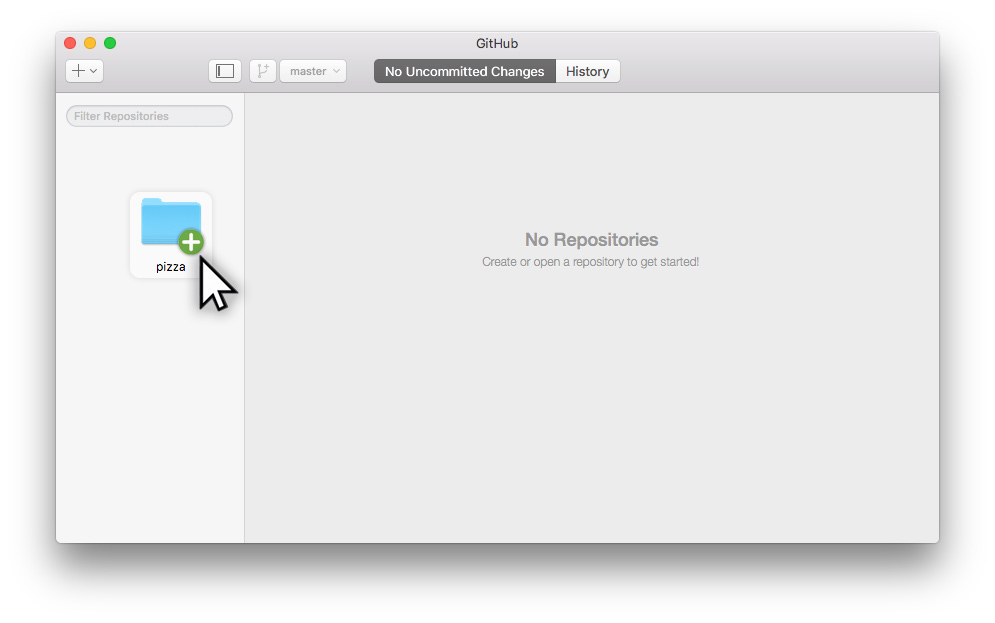

Introduction to GitHub
The Power of Verson Control
https://github.com/GalvanizeOpenSource/Chocolate-Chip-Cookies
Add "Made at Galvanize" icon in corner
Jenny.Galvanize@gmail.com
Password: LearnToCode
GitHub: LearnToCode1!
Overview
In this course, we'll be going over the following:
Don't worry if you don't know these terms yet, you will in this lesson.
Download Github for Desktop
Take a moment to download GitHub Desktop. We'll be using this application to work with GitHub and it works for both Mac and Windows.

The Value of GitHub
Nearly all web programmers today use GitHub, or a similar application, to help them do three things well:
Version Control
Every edit of the project is saved so you can go back and track changes.
One Safe Place
When working on more than one computer, this creates one location for all the files to be for easy editings.
Collaboration
When working with others, having a method you can both edit the same set of files it absolutely necessary.
Important Terms
Common works related to this subject that may be new for you:
-
Git — The open-source system used for version control. Created by Linus Trovalds in 2005, who also created Linux.
-
GitHub — A company that created an easy way to manage Git and the name of their software.
-
GitHub.com — The website where users can view all code projects online.
-
GitHub Desktop — An application that is installed on your computer which is the easiest way to post code to GitHub.com.
-
Repo — Short for repository
-
Repository — Is the project's folder and all the files, documentation, and versions saved.
-
Commit — Fancy term used referring to saving the latest changes to a new version.
Don't worry if any (or all) of these terms sound confusing. With a little practice, you'll find yourself quickly using these terms professionally.
See GitHub in Action
Before having you jump into GitHub, here is an overview of the development process to help you understand how all of this works.
Jenny has been learning HTML & CSS to create her first web page. She created a simple web page listing her favorite pizza toppings. She has been told about GitHub and wants to see how this can help as she creates larger web projects for herself and clients.
GitHub makes Web Hosting Easy.
Since Jenny has just learned about GitHub and created her first web page, she went to GitHub.com and signed up for a free account. She then downloaded and installed GitHub Desktop. Once she had the necessary software, she was ready to learn how to use GitHub.
Posting First Project
On her computer, Jenny has a folder with her web files called favorite-pizza-toppings that contains all of her HTML & CSS files with an image. All she has to do to post her project onto GitHub, is to drag and drop the favorite-pizza-toppings folder onto the GitHub Desktop application.

Creating New Repository
Since this is a new project within GitHub, there will be an alert box that pops up stating that this is a new project folder for GitHub—don't worry, this is normal and good.
In order to create a git repository her, Jenny clicks Create and Add.

Review Project Inventory
GitHub has just reviewed her project folder and has taken inventory of all the files associated with it. She can click through each file and image to see what is being uploaded.
<IMAGE - Clicking through files>
Adding Summary & Description
Every version of this project that Jenny wishes to commit changes to, needs a Summary and Description for this project.
This would be a good example:
<Add into Image>
Summary: First Draft
Description: Created simple web page with a heading, unordered list, and a photo with a simple CSS layout.
Every time a version is committed (aka saved), she'll need to add a Summary and Description of the changes she made. Since this is her first draft, she is keeping it simple.
Once Jenny is ready to upload her files, she simply clicks, Commit and Sync Master.
Committing Changes
Since this is the first time Jenny is publishing this project onto GitHub, it will ask this only time for a Name and Description for this project. This can seem a little redundant, but this should be the name of this project and a more general description of it. This typically doesn't change throughout the project development and will help label this project on GitHub.
Summary: Favorite Pizza Toppings
Description: Single web page using HTML & CSS, listing my favorite pizza toppings.

GitHub's is free for posting your files publically and you can keep your files private if you pay a monthly fee ($7/month). A lot of people that are new to this industry feel protective of their files and want to keep them to themselves. But is nearly all cases, there is little you are doing now that can't easily be recreated by other professionals and there are always other ways of stealing your code if necessary. Try not to get too wrapped up with this.
When Jenny is ready to post her files to GitHub, she simply clicks Publish Repository.
At this time, Jenny's files are being uploaded to GitHub.com.
See, this isn't so difficult! :)
Finding your Files
Now that Jenny has published her first repository, she has it in two places:
-
Local repository on your computer — Jenny can work on this repository without an Internet connection using GitHub Desktop. As she gets to certain steps in your project development, she can commit (save) here changes onto GitHub.com
-
Remote repository on GitHub.com — Her project will be stored online so she can access it from any other computer or even send friends links to her repository on GitHub.com so they can see her code and make new reversions with changes that she can review.
Let's find her GitHub.com Repo
Once the files are posted online, Jenny can log into GitHub and see all of her files online.
Keeping Files Safe
If for any reason her work computer failed, she simply can download her entire project back to any computer.
Create Readme
Create new Readme file
Commit
Back in Desktop - Sync
Find new readme in folder.
Creating Updated
Make update to HTML and CSS page.
Open GitHub Desktop to see recignized changes.
Push new commit & new desciption
See changes online.
Make changes, commit often, repeat.
http://www.ranker.com/list/the-tastiest-pizza-toppings/chef-jen
Forking
Introduce Senerio where Jenny wants to work on a project someone else already started.
More Fun Tech terms:
cloning - direct copy - same repo
forking - two different direction that never meet up again. - new repo
Needs to find the repo at GitHub.com
Clone - explain definition
( Download to Desktop to Download Zip)
Download to Desktop - Connected to GitHub Desktop
Download Zip - Only file without Git Connection.
----
Showcase Edits to new Project
Commits to new project.
Getting code from GitHub.com
If you want to get some code from GitHub.com onto your computer or synchronize changes between multiple computers, you’ll need to either pull changes or clone a repository:
Clone a repository — Jenny just got home and wants to move the project onto her home computer.
Click the “Clone in Desktop” button on GitHub.com to create a new copy of a repository on your computer.
Pull changes — As Jenny moves back and forth between her Work and Home computers, she'll need to make sure she is always working with the latest project.
.
See GitHub in Action
Getting code from GitHub.com
If you want to get some code from GitHub.com onto your computer or synchronize changes between multiple computers, you’ll need to either pull changes or clone a repository:
Clone a repository — Jenny just got home and wants to move the project onto her home computer.
Click the “Clone in Desktop” button on GitHub.com to create a new copy of a repository on your computer.
Pull changes — As Jenny moves back and forth between her Work and Home computers, she'll need to make sure she is always working with the latest project.
Click the “Sync” button in the upper-right corner of GitHub Desktop to bring code from an online repository (for example, changes that your co-worker pushed up) onto your computer. Note: This will also push changes you haven’t pushed yet.
Create GitGub Page
No more web hosting
Branch - must name as gh-pages.

Setting > Branches

New Edits are submitted

Find your URL:

Download GitHub Desktop
SignUp for GitHub Account.
Verify Email address
Open GitHub Desktop
Enter Username/Password